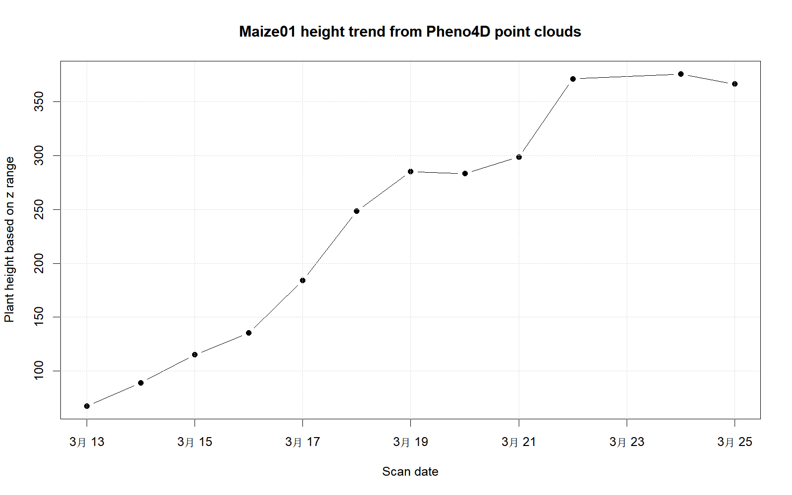

研究背景
本项目复现 Schunck et al. (2021) 发布的 Pheno4D 数据集中玉米点云的时序表型分析思路。Pheno4D 数据集提供玉米和番茄的多时相三维点云数据，可用于植物表型提取、器官分割、时间序列分析等任务。
本项目不完整复现论文中的深度学习分割模型，而是选取玉米点云数据，围绕“点云数据能否用于提取玉米株高并描述生长变化”这一主结果开展轻量级复现。
数据来源
原始数据来自 Pheno4D 公开数据集。由于原始数据体积较大，本仓库不上传 Pheno4D.zip 和解压后的原始点云文件，只保留数据来源说明、处理脚本、处理后的结果表和可视化结果。
本项目当前选取 Maize01 这一株玉米的 12 个时相点云文件进行分析。
数据预处理
Pheno4D 的玉米点云文件包括两种格式：
带 _a 的标注文件：包含 x, y, z, semantic_label, instance_label 五列；
不带 _a 的普通点云文件：包含 x, y, z 三列。
本项目暂不使用语义标签，只基于第三列 z 坐标提取玉米株高。计算方式为：
[ Height = max(z) - min(z) ]
该指标可以反映单株玉米在不同扫描日期下的垂直高度变化。
分析代码
本项目使用 scripts/01_extract_maize01_height.R 完成数据读取、株高计算、结果表导出和趋势图绘制。
<- read.csv ("data/processed/maize01_height.csv" )
plant_id file_name date_code scan_date annotated n_columns n_points
1 Maize01 M01_0313_a.txt 313 2020-03-13 TRUE 5 1554168
2 Maize01 M01_0314.txt 314 2020-03-14 FALSE 3 1641908
3 Maize01 M01_0315_a.txt 315 2020-03-15 TRUE 5 1301557
4 Maize01 M01_0316.txt 316 2020-03-16 FALSE 3 1026080
5 Maize01 M01_0317_a.txt 317 2020-03-17 TRUE 5 803846
6 Maize01 M01_0318.txt 318 2020-03-18 FALSE 3 337476
7 Maize01 M01_0319_a.txt 319 2020-03-19 TRUE 5 860826
8 Maize01 M01_0320.txt 320 2020-03-20 FALSE 3 527758
9 Maize01 M01_0321_a.txt 321 2020-03-21 TRUE 5 1114990
10 Maize01 M01_0322.txt 322 2020-03-22 FALSE 3 805391
11 Maize01 M01_0324_a.txt 324 2020-03-24 TRUE 5 1214597
12 Maize01 M01_0325_a.txt 325 2020-03-25 TRUE 5 1407956
z_min z_max height_z_range day_index
1 -9.1819 58.4688 67.6507 1
2 -9.0547 79.8980 88.9527 2
3 -10.0125 105.1318 115.1443 3
4 -8.4022 127.0399 135.4421 4
5 -9.7284 174.5878 184.3162 5
6 -9.8698 238.7699 248.6397 6
7 -9.8332 275.2620 285.0952 7
8 -10.9408 272.2912 283.2320 8
9 -9.4023 289.2375 298.6398 9
10 -1.5914 369.5771 371.1685 10
11 -11.0004 364.6296 375.6300 11
12 -10.3512 356.0744 366.4256 12
结果可视化
$ scan_date <- as.Date (height_data$ scan_date)plot ($ scan_date,$ height_z_range,type = "b" ,pch = 19 ,xlab = "Scan date" ,ylab = "Plant height based on z range" ,main = "Maize01 height trend from Pheno4D point clouds" grid ()
也可以直接查看脚本输出的图片：

结果解读
从结果可以看出，Maize01 的点云高度总体随扫描日期增加而上升，说明三维点云能够较好地反映玉米单株在连续观测期内的生长变化。早期扫描日期的株高较低，后期株高明显增加，这与玉米营养生长期植株快速伸长的基本规律一致。
需要注意的是，本项目使用的是 z 坐标范围作为株高的近似指标。该方法简单、可重复，适合作为课程项目的轻量级复现方案。但它也可能受到地面点、噪声点和扫描坐标系差异的影响。若进一步提高精度，可以在后续分析中加入地面点过滤、语义标签筛选或更严格的点云配准方法。
复现说明
完整复现流程如下：
下载 Pheno4D 原始数据；
解压 Pheno4D/Maize01/ 文件夹；
运行 scripts/01_extract_maize01_height.R；
生成 data/processed/maize01_height.csv；
生成 results/figures/maize01_height_trend.png；
运行 quarto render 生成网页报告。
小结
本项目完成了从原始点云数据、数据预处理、表型指标提取、可视化分析到 Quarto 报告生成的完整流程。虽然复现范围较小，但覆盖了课程要求中的数据来源说明、数据分析及可视化、研究报告和可重复性说明。